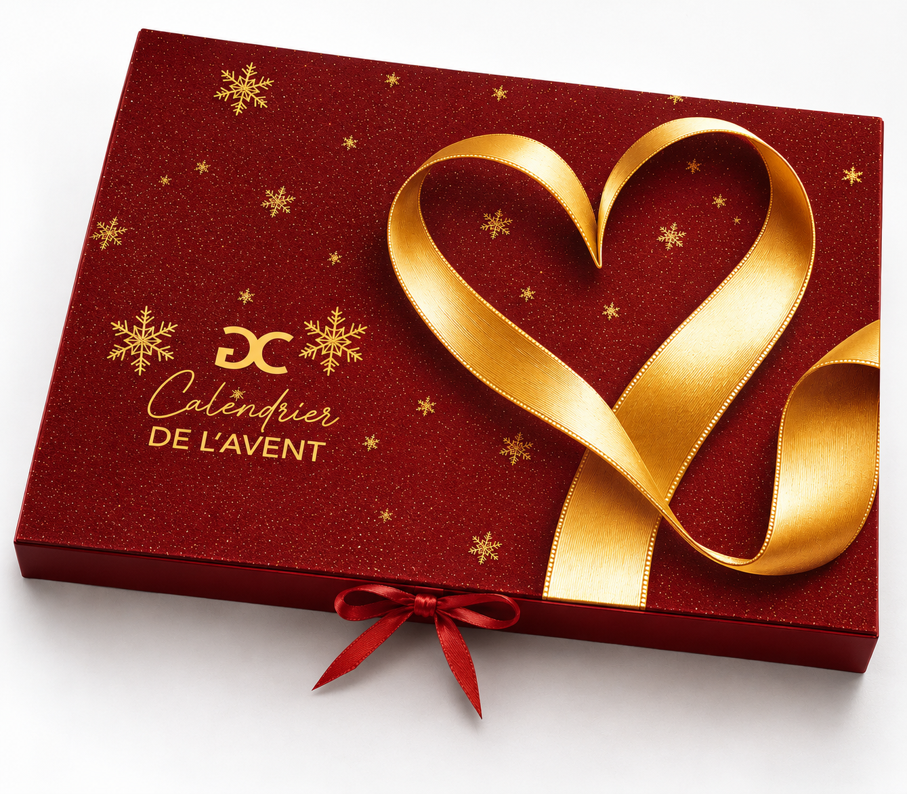

Intention
Le parti pris associe un rouge profond à des accents dorés pour évoquer la fête, le cadeau et l’univers de la bijouterie. Le ruban dessine un cœur et devient le geste central de la composition.
Un univers rouge et or conçu pour transformer le calendrier de l’Avent en objet précieux et festif.

Ce projet est présenté comme une réalisation menée en entreprise, et non comme une commande directe de la marque.
Le parti pris associe un rouge profond à des accents dorés pour évoquer la fête, le cadeau et l’univers de la bijouterie. Le ruban dessine un cœur et devient le geste central de la composition.
Le calendrier prend la forme d’un écrin. La composition reste directe et identifiable, tout en donnant au support une présence premium adaptée à la période de Noël.